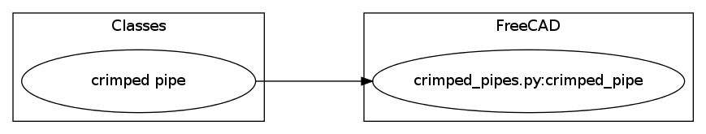

<div class="page-title-bar">
  <div class="inner-content">
    <h2>{{ page.title }}</h2>
  </div>
</div>

<div id="content">
  <div class="inner-content">
    by <a href='mailto:f.pollastri@inrim.it'>Fabrizio Pollastri</a><br>
    under <a href='http://www.gnu.org/licenses/lgpl-3.0'>LGPL 3.0+</a><br>
    collection-id crimped_pipes<br>
  </div>

  <div class="inner-content">
    <h1>Description</h1>
    pipes with crimped ends
  </div>

  <div class="inner-content">
    <h1>Specifications</h1>
    <table class="table">
      <tr><th>Name</th> <th>Description</th> <th>Status</th><tr>
<tr class='active'><td><a href='../classes/crimped pipe.html'>crimped pipe</a></td> <td>a pipe crimped at both ends</td> <td>active</td></tr>
    </table>
  </div>

  <div class="inner-content">
    <h1>Diagram</h1>
    <table class="table">
      </img>
    </table>
  </div>

</div>
